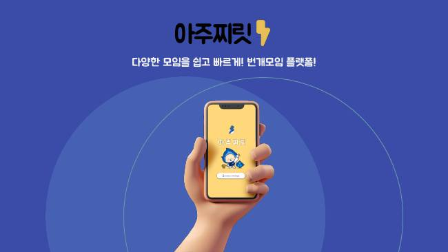
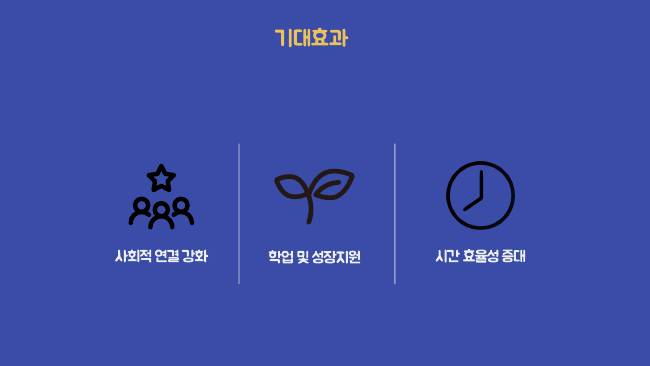

01
가벼운 번개 모임
24시간 안에 모집하고 당일 만나는 모임을 제안합니다.
동아리는 부담스럽고 기존 모임 앱은 연애 목적이 많아 신뢰하기 어렵다는 학생 인터뷰에서 출발했습니다. 아주대 학생끼리 24시간 안에 모집하고 당일 만나는 가벼운 번개모임을 목표로, 공부·운동·게임·밥&술 같은 소모임 카테고리, 즉흥적인 모집, 위치 정보 아이콘을 제공하고 평가 지표로 신뢰성을 높였습니다.
프로젝트 살펴보기 ↓
동아리는 부담스럽고 기존 모임 앱은 연애 목적이 많아 신뢰하기 어렵다는 학생 인터뷰에서 출발했습니다. 아주대 학생끼리 24시간 안에 모집하고 당일 만나는 가벼운 번개모임을 목표로, 공부·운동·게임·밥&술 같은 소모임 카테고리, 즉흥적인 모집, 위치 정보 아이콘을 제공하고 평가 지표로 신뢰성을 높였습니다.
24시간 안에 모집하고 당일 만나는 모임을 제안합니다.
공부, 운동, 게임, 식사 등 주제로 모임을 찾습니다.
위치 정보와 평가 지표로 안심할 수 있는 교류를 돕습니다.
발표 자료에 담긴 서비스의 모습과 아이디어를 살펴보세요.
